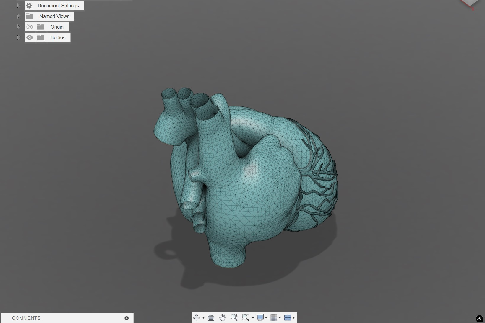

Moving away from parametric CAD for a moment, I used Blender to sculpt this anatomical heart. This project was a deep dive into organic modeling and mesh topology. Rather than defining features with precise measurements, I had to focus on visual flow and anatomical accuracy, which required a completely different problem-solving mindset. It was a challenging exercise in digital sculpting that helped me gain a better grasp of how to handle complex, non-linear geometries—a skill that is surprisingly useful when designing ergonomic handles or housing for custom hardware where standard CAD tools feel too rigid.
